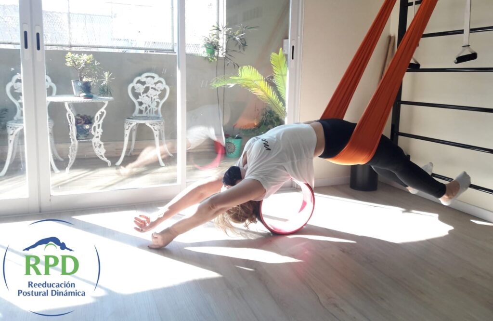

Kinesiología y tratamientos especializados
Evaluamos, tratamos y hacemos seguimiento de tu recuperación con las técnicas que mejor se adaptan a tu diagnóstico y a tu día a día.

Kinesiología
Evaluación y tratamiento kinésico para recuperar movilidad, fuerza y funcionalidad.
- Evaluación y diagnóstico funcional inicial
- Plan individual según tu diagnóstico y actividad
- Seguimiento y reevaluación en cada control

RPD Postural
Reeducación postural dinámica trabajando cadenas musculares completas.
- Trabajo por cadenas musculares, no músculos aislados
- Corrección postural progresiva
- Alivio de contracturas y dolor de espalda

Ondas de choque radiales
Tecnología no invasiva para dolor crónico y tendinopatías persistentes.
- Sesiones breves, sin tiempo de recuperación posterior
- Indicada cuando otros tratamientos no funcionaron
- Favorece la regeneración tisular

Acupuntura kinésica
Estimulación de puntos específicos integrada al plan de tratamiento.
- Estimulación de puntos específicos
- Reducción del dolor asociado al tratamiento
- Integrada a tu plan kinésico general
Cómo trabajamos cada tratamiento

Kinesiología
Evaluación y tratamiento kinésico para recuperar movilidad, fuerza y funcionalidad después de una lesión, cirugía o dolor crónico. Trabajamos con planes individuales según tu diagnóstico, edad y actividad física.

Reeducación Postural Dinámica (RPD)
Técnica que trabaja cadenas musculares completas —no músculos aislados— para corregir la postura, aliviar contracturas y tratar dolores de espalda de origen postural.
Ondas de choque radiales
Tecnología no invasiva indicada para dolor crónico, tendinopatías y lesiones que no respondieron a otros tratamientos, con sesiones breves y sin tiempo de recuperación posterior. Favorece la regeneración tisular, reduce el dolor y acelera la recuperación.
Indicada para tendinitis calcificante del manguito rotador, codo de tenista, trocanteritis, tendinitis rotuliana, fascitis plantar, espolón calcáneo, y epicondilitis o epitrocleitis crónica.
Acupuntura kinésica
Estimulación de puntos específicos para reducir el dolor y favorecer la recuperación, integrada al plan de tratamiento kinésico general.
De la evaluación al alta, con cada grado medido
Igual que un goniómetro mide un ángulo articular, medimos y ajustamos tu tratamiento en cada etapa.
Evaluación inicial
Medimos tu rango de movimiento actual y conversamos sobre tu historia clínica y tus objetivos.
Tratamiento personalizado
Diseñamos un plan con las técnicas que mejor se adapten a tu caso particular.
Seguimiento y alta
Reevaluamos tu progreso en cada control hasta recuperar tu movilidad y darte el alta.
¿Empezamos con tu tratamiento?
Coordiná tu turno hoy mismo por WhatsApp o llamando al centro.